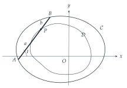
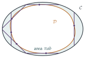

A movable point \(P\) has cartesian coordinates \((x, y)\), where \(x\) and \(y\) are functions of \(t\). The polar coordinates of \(P\) with respect to the origin \(O\) are \(r\) and \(\theta\). Starting with the expression \[\tfrac12\int r^2\,\mathrm{d}\theta\] for the area swept out by \(OP\), obtain the equivalent expression \[\tfrac12\int\left(x\frac{\mathrm{d}y}{\mathrm{d}t} - y\frac{\mathrm{d}x}{\mathrm{d}t}\right)\mathrm{d}t. \tag{$*$}\]
The ends of a thin straight rod \(AB\) lie on a closed convex curve \(\mathcal{C}\). The point \(P\) on the rod is a fixed distance \(a\) from \(A\) and a fixed distance \(b\) from \(B\). The angle between \(AB\) and the positive \(x\) direction is \(t\). As \(A\) and \(B\) move anticlockwise round \(\mathcal{C}\), the angle \(t\) increases from \(0\) to \(2\pi\) and \(P\) traces a closed convex curve \(\mathcal{D}\) inside \(\mathcal{C}\), with the origin \(O\) lying inside \(\mathcal{D}\), as shown in the diagram.

Let \((x, y)\) be the coordinates of \(P\). Write down the coordinates of \(A\) and \(B\) in terms of \(a\), \(b\), \(x\), \(y\) and \(t\).
The areas swept out by \(OA\), \(OB\) and \(OP\) are denoted by \([A]\), \([B]\) and \([P]\), respectively. Show, using \((*)\), that \[[A] = [P] + \pi a^2 - af\] where \[f = \tfrac12\int_0^{2\pi}\left(\left(x + \frac{\mathrm{d}y}{\mathrm{d}t}\right)\cos t + \left(y - \frac{\mathrm{d}x}{\mathrm{d}t}\right)\sin t\right)\mathrm{d}t.\] Obtain a corresponding expression for \([B]\) involving \(b\). Hence show that the area between the curves \(\mathcal{C}\) and \(\mathcal{D}\) is \(\pi ab\).
The hook
Take any oval, any shape at all as long as it is convex, and slide a rod of fixed length round inside it, keeping both ends on the curve. Paint a dot on the rod, dividing it into lengths \(a\) and \(b\). As the rod goes once round, the dot traces out a smaller oval. What is the area of the ring between the two curves?
The astonishing answer is \(\pi ab\), whatever the shape of the original curve. A long thin oval, an egg, a rounded triangle: the area of the ring is always the same, and it depends only on where the dot is on the rod. The result was found in 1858 by the Reverend Hamnet Holditch, a fellow of Gonville and Caius College, Cambridge, and it is one of the most surprising theorems in elementary geometry. This question proves it with a single formula for area.
Before you start
Check the theorem in the simplest case. If \(\mathcal{C}\) is a circle of radius \(R\), what curve does \(P\) trace, and what is the area of the ring?
By symmetry, \(P\) traces a circle of some radius \(r\) with the same centre. The rod \(AB\) is a chord of the big circle through \(P\), and the intersecting chords theorem (or “power of a point”) says that for any chord through \(P\), \(PA \times PB = R^2 - r^2\). So \(ab = R^2 - r^2\), and the ring has area \(\pi R^2 - \pi r^2 = \pi ab\). The theorem says this remains true for every convex curve, not just circles.
Working it through
Stage 1 Area from coordinates
With \(x = r\cos\theta\) and \(y = r\sin\theta\), all functions of \(t\), compute \(x\dot y - y\dot x\), where dots denote \(\frac{\mathrm{d}}{\mathrm{d}t}\).
\(\dot x = \dot r\cos\theta - r\sin\theta\,\dot\theta\) and \(\dot y = \dot r\sin\theta + r\cos\theta\,\dot\theta\). Then \[x\dot y - y\dot x = r\cos\theta\,(\dot r\sin\theta + r\cos\theta\,\dot\theta) - r\sin\theta\,(\dot r\cos\theta - r\sin\theta\,\dot\theta) = r^2\dot\theta.\] So \(\frac12\int r^2\,\mathrm{d}\theta = \frac12\int r^2\dot\theta\,\mathrm{d}t = \frac12\int (x\dot y - y\dot x)\,\mathrm{d}t\).■
This formula needs no polar coordinates, only the cartesian position as a function of a parameter. When a point goes once anticlockwise round a closed curve enclosing \(O\), it gives the area inside the curve.
Stage 2 The ends of the rod
The rod points in the direction \((\cos t, \sin t)\) from \(A\) to \(B\), with \(P\) a distance \(a\) from \(A\) and \(b\) from \(B\). So \[A = (x - a\cos t,\; y - a\sin t), \qquad B = (x + b\cos t,\; y + b\sin t).\]
Stage 3 The area swept by \(OA\)
Apply \((*)\) to \(A\). Expand \(x_A\dot y_A - y_A\dot x_A\) and sort the terms by powers of \(a\).
With \(x_A = x - a\cos t\), \(y_A = y - a\sin t\), we have \(\dot x_A = \dot x + a\sin t\) and \(\dot y_A = \dot y - a\cos t\). Expanding, \[\begin{aligned} x_A\dot y_A - y_A\dot x_A &= (x - a\cos t)(\dot y - a\cos t) - (y - a\sin t)(\dot x + a\sin t) \\ &= (x\dot y - y\dot x) + a^2(\cos^2 t + \sin^2 t) - a\bigl[(x + \dot y)\cos t + (y - \dot x)\sin t\bigr]. \end{aligned}\] Integrating from \(0\) to \(2\pi\) and halving: the first term gives \([P]\), the second gives \(\frac12 a^2 \cdot 2\pi = \pi a^2\), and the third gives \(-af\). So \[[A] = [P] + \pi a^2 - af. \qed\]
Now find \([B]\). (Hint: \(B\) is obtained from the formula for \(A\) by replacing \(a\) with what?)
\(B = (x + b\cos t, y + b\sin t)\) is the formula for \(A\) with \(a\) replaced by \(-b\). So \[[B] = [P] + \pi b^2 + bf.\]
Stage 4 Eliminating \(f\)
Both \(A\) and \(B\) go once round the same curve \(\mathcal{C}\). What does that tell you about \([A]\) and \([B]\)?
Each of \(A\) and \(B\) travels once anticlockwise round \(\mathcal{C}\) as \(t\) goes from \(0\) to \(2\pi\), so \([A] = [B] = \text{area}(\mathcal{C})\). Equating the two expressions, \[\pi a^2 - af = \pi b^2 + bf \quad\Longrightarrow\quad f(a + b) = \pi(a^2 - b^2) \quad\Longrightarrow\quad f = \pi(a - b).\] Since \(P\) goes once round \(\mathcal{D}\), \([P] = \text{area}(\mathcal{D})\), and \[\text{area}(\mathcal{C}) - \text{area}(\mathcal{D}) = [A] - [P] = \pi a^2 - a\pi(a - b) = \pi ab. \qed\] The mysterious quantity \(f\), which depends on the shape of the curve, was never computed: it was eliminated.
Looking back
A formula suited to the problem. The area formula \((*)\) needed only coordinates as functions of a parameter, which is exactly how the rod’s motion is described.
Two expressions, one unknown. We could not compute \(f\), but we had two equations involving it, so we eliminated it, like solving simultaneous equations.
Test the special case first. The circle gave the answer \(\pi ab\) before we started, and told us what to aim for.
What’s really going on
The formula \((*)\) is a special case of Green’s theorem, which relates an integral round a closed curve to an integral over the region inside it. In its area form, it says that the area enclosed by a curve is \(\frac12\oint(x\,\mathrm{d}y - y\,\mathrm{d}x)\), an integral that can be computed by travelling round the boundary alone. Engineers exploited this with the planimeter, a mechanical instrument invented in the nineteenth century (Jakob Amsler’s 1854 design was the most successful): you trace the boundary of a shape on a map or diagram with a pointer, and a wheel records the enclosed area. Planimeters were used to measure land areas, to compute the work done in steam engines from indicator diagrams, and in many other applications, until digital methods replaced them. Holditch’s theorem is closely related: the rod is like the arm of a planimeter.

The fine print
Holditch stated his theorem without much care for conditions, and it needs some. The rod must be able to go all the way round with both ends on the curve, and the traced curve \(\mathcal{D}\) must be a simple closed curve traced once; if the rod is too long compared with the width of \(\mathcal{C}\), \(\mathcal{D}\) can cross itself, and the “area” given by the formula counts some regions twice or with a negative sign. The question avoids these difficulties by assuming \(\mathcal{D}\) is a convex curve containing \(O\). Finding exactly when the theorem holds is a good example of how a beautiful idea must be made precise, a theme of Chapter 3.
The thinking skill
If a quantity is too complicated to calculate, look for two different equations that contain it, and eliminate it.
Here \(f\) depended on every detail of the curve, but it appeared in the expressions for both \([A]\) and \([B]\), and the fact that \([A] = [B]\) removed it. The answer, \(\pi ab\), could only be independent of the curve because the curve-dependent part cancelled.
Try this next
The area of an ellipse. Use \((*)\) with \(x = p\cos t\), \(y = q\sin t\) to show that an ellipse with semi-axes \(p\) and \(q\) has area \(\pi pq\).
The circle case. Prove the intersecting chords theorem: if two chords of a circle meet at \(P\), the products of the lengths of their two segments are equal. Deduce Holditch’s theorem for a circle.
The midpoint. Show that \(f = \pi(a - b)\) means that when \(P\) is the midpoint of the rod, \(f = 0\). What is the ring’s area then, in terms of the rod’s length \(L\)?
A triangle. harder Use \((*)\) to find the area of the triangle with vertices \((0, 0)\), \((x_1, y_1)\), \((x_2, y_2)\), traversing its boundary, and show it equals \(\frac12|x_1y_2 - x_2y_1|\). This is the start of the “shoelace formula” for the area of any polygon.
Further reading
Mark Levi, The Mathematical Mechanic (Princeton University Press). Uses physical reasoning, with rods, wheels and springs, to prove mathematical results, in the spirit of this section.
H. M. Schey, Div, Grad, Curl, and All That (Norton). An informal introduction to vector calculus, including Green’s theorem.
Hamnet Holditch, “Geometrical theorem”, Quarterly Journal of Pure and Applied Mathematics 2 (1858). The original note, a single short paragraph with none of the fine print.